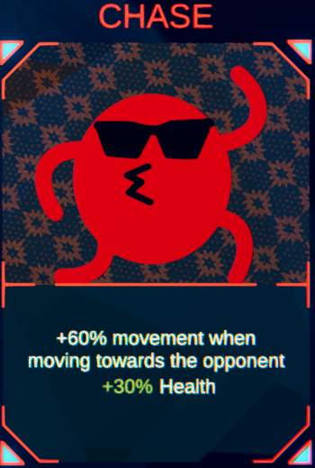

Chase

Chase is an uncommon card which grants +60% movement speed when moving towards another player.
There are no downsides to this card due to it being quite situational to use.
Despite the cards description stating that it gives +30% health, this is a lie as the card is currently bugged and gives no extra health.
This card doesn't synergises with any cards and more acts as a supporting card to your build.